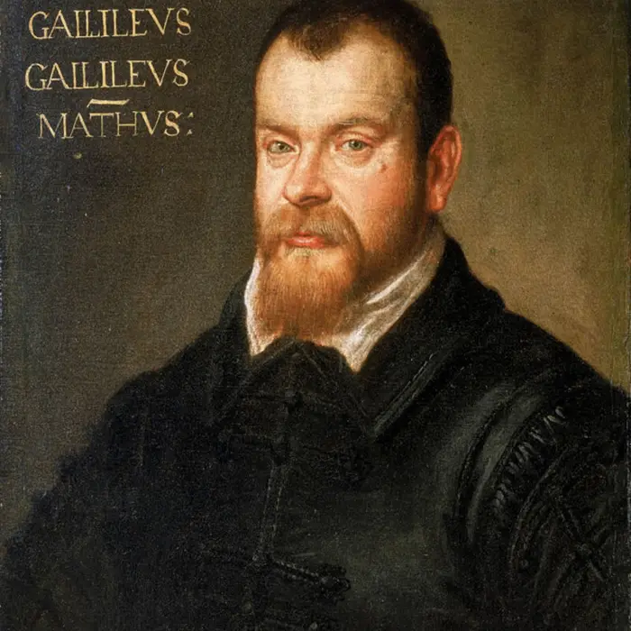
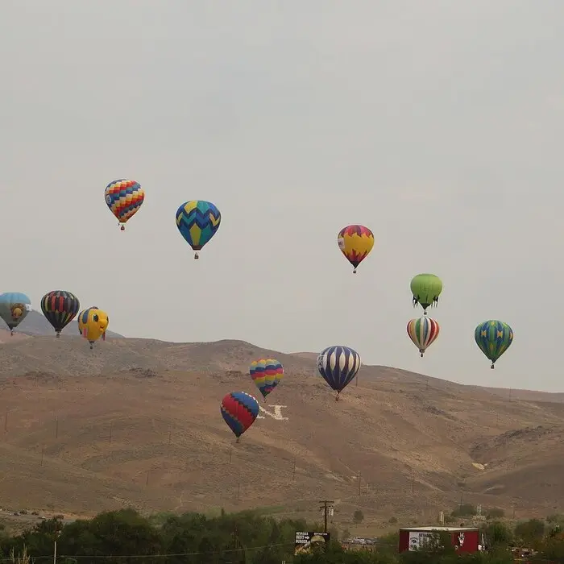
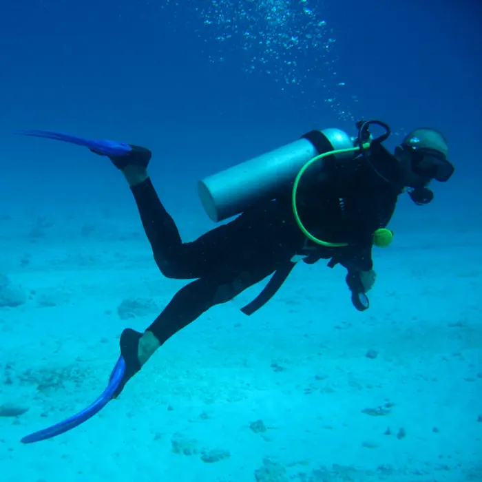
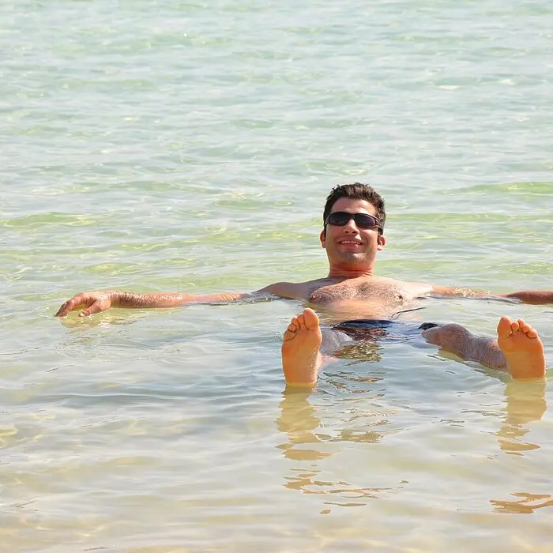

Why does a massive steel ship float while a tiny pebble sinks? The answer is a 2,200-year-old discovery made in a bathtub — and it explains everything from submarines to hot air balloons.
Who Was Archimedes?
Archimedes of Syracuse (287–212 BC) was an ancient Greek mathematician, physicist, and inventor — one of the greatest scientists of the ancient world. Legend says that King Hiero II of Syracuse asked him to figure out whether a golden crown was pure gold or mixed with cheaper silver, without melting it down. While stepping into a bath, Archimedes noticed the water level rise as he got in, and suddenly understood the answer. He was so excited that he reportedly ran through the streets shouting "Eureka!" — Greek for "I have found it!" Archimedes also designed war machines, calculated the value of π, and invented the Archimedes screw, still used to pump water today.
History & Legacy
Archimedes' bathtub discovery is one of the oldest surviving "aha!" moments in science — and it didn't end well for him, or stay still for long.
212 BC
Killed mid-calculation
When Roman soldiers finally captured Syracuse after a two-year siege — one Archimedes helped delay with his war machines — a soldier found the elderly Archimedes drawing geometric diagrams in the sand. Legend says his last words were "Do not disturb my circles." The soldier killed him anyway, against orders to take him alive.

1586 AD
Galileo rebuilds the method
1,800 years later, a young Galileo Galilei wrote his first scientific paper, La Bilancetta ("The Little Balance"), describing a hydrostatic balance built directly on Archimedes' crown problem — using density and displacement to weigh objects in water. It was Galileo's introduction to the scientific method he'd later use to transform physics and astronomy.
What is Buoyancy?
Eureka!
When you push an object into water, the water has to move out of the way. The water "fights back" — it pushes upward on the object. This upward push is called the buoyant force. It is why things feel lighter when you hold them underwater.
Archimedes' Principle — The Big Idea
"An object submerged in a fluid experiences an upward buoyant force equal to the
weight of the fluid it displaces."
In plain English: the more water your object pushes aside (displaces), the harder the water pushes back up. A large hollow object displaces a lot of water, so it gets a very strong upward push. A small dense object displaces very little water, so the upward push is weak.
Feel it yourself: Fill a bowl with water and slowly push a sealed empty plastic bottle under the surface. You can feel the water pushing back! That push is the buoyant force — and it equals the weight of all the water the bottle is shoving out of the way.
The Two Forces on Every Submerged Object
Every object in a fluid has two forces acting on it vertically:
↓ Weight (gravity) — pulls the object down. Depends on how much mass the object has. ↑ Buoyant Force — pushes the object up. Depends on how much fluid the object displaces.
If the buoyant force is greater than or equal to the weight → the object floats.
If the weight is greater than the buoyant force → the object sinks.
Density — The Key to Sink or Float
The easiest way to predict whether something sinks or floats is to compare its density to the density of the fluid.
ρ = m ÷ V
ρ (rho) = Density (g/cm³ or kg/m³)
m = Mass (grams or kilograms)
V = Volume (cm³ or m³)
The golden rule: If an object's density is less than the fluid's density → it floats. If it's greater → it sinks. Water has a density of 1.0 g/cm³. Anything denser than 1.0 sinks in water. Anything less dense floats.
Density of Common Materials vs. Water
Material
Density (g/cm³)
Compared to water
Result in water
🪵 Pine wood
0.55
Floats ✓
🧊 Ice
0.92
Floats ✓
💧 Water
1.00
Neutral
🪨 Granite rock
2.70
>max
Sinks ✗
🔩 Aluminum
2.70
>max
Sinks ✗
⚙️ Steel
7.85
>max
Sinks ✗
🪙 Gold
19.30
>max
Sinks ✗
Sink or Float Machine
Select an object in the Controls panel, then drop it into the tank.
Object density—g/cm³
vs. Water (1.0)—
Result
Buoyancy & Fluid Dynamics (Interactive)
Explore how buoyancy forces depend on object density, mass, and fluid density. Watch real-time fluid dynamics in action:
How to use:
Adjust Object Density and Fluid Density with the sliders below
Watch the Physics Display update in real-time
Observe how the Net Force determines if an object floats or sinks
Click the canvas to create ripples and disturb the fluid
500 kg/m³
1 kg
1000 kg/m³ (Water)
Physics Principle:
Buoyant Force = ρfluid × g × Vobject
If Buoyant Force > Weight Force, the object floats. If Buoyant Force < Weight Force, the object sinks.
How Do Steel Ships Float?
Steel has a density of about 7.85 g/cm³ — nearly 8 times denser than water. So why doesn't a steel ship immediately sink? The answer is shape and air.
Solid steel ball
⚙️
A solid steel ball has no air inside. Its overall density is 7.85 g/cm³ — much greater than water. The water cannot push it up hard enough. It sinks.
Hollow steel hull (ship)
🚢
A ship's hull is hollow and filled with air. The average density of the whole ship (steel + air + everything inside) is much less than 1.0 g/cm³. The ship displaces enough water to balance its weight. It floats.
The key insight: Whether something floats depends on the average density of the whole object, not just the material it is made of. A crumpled-up ball of aluminum foil sinks — but the same piece of foil shaped into a boat floats. Shape changes the average density by trapping air.
Submarines: Controlling Buoyancy on Purpose
Submarines can both sink and rise by changing their average density. They carry large tanks called ballast tanks. When the tanks are filled with water, the sub gets denser and dives. When compressed air is pumped into the tanks (pushing the water out), the sub gets less dense and rises. This is pure Archimedes' Principle — on demand.
Archimedes' Principle in the Real World
Buoyancy appears everywhere — from ocean engineering to meteorology to medicine.
Ship Design
Naval engineers design hull shapes that displace enough water to support the ship's weight, plus cargo, passengers, and fuel — with a safety margin called the load line.

Hot Air Balloons
Heating air makes it less dense. A balloon filled with hot air is less dense than the surrounding cool air, so the air "floats" upward — the same principle, just in air instead of water.

Scuba Diving
Divers wear buoyancy compensators — inflatable vests that let them add or release air to hover at any depth, ascend, or descend without swimming hard.

Dead Sea
The Dead Sea is so salty (density ~1.24 g/cm³) that the human body (density ~1.0 g/cm³) floats effortlessly without any swimming. The denser the fluid, the stronger the buoyant force.
Practice Problems
Use ρ = m ÷ V and compare to water (1.0 g/cm³). Round to two decimal places.
Easy1. An object has a density of 0.7 g/cm³. Will it sink or float in water? Type 1 for float, 0 for sink.
Hint: 0.7 < 1.0 (water), so it floats. Answer: 1
Easy2. A rock has a mass of 270 g and a volume of 100 cm³. What is its density in g/cm³? (ρ = m ÷ V)
Hint: 270 ÷ 100 = 2.70 g/cm³
Medium3. A piece of wood has a mass of 110 g and a volume of 200 cm³. What is its density, and will it sink or float? Enter just the density value.
Hint: 110 ÷ 200 = 0.55 g/cm³ — less than 1.0, so it floats.
Medium4. Ice has a density of 0.92 g/cm³. What percentage of an ice cube is below the waterline? (Use: % submerged = object density ÷ fluid density × 100)
Hint: 0.92 ÷ 1.0 × 100 = 92%. That's why most of an iceberg is underwater!
Challenge5. A hollow steel sphere has an outer volume of 400 cm³ and a mass of 120 g. What is its average density, and will it float?
Hint: avg density = total mass ÷ total volume = 120 ÷ 400 = 0.30 g/cm³. Less than 1.0 → it floats, even though it is made of steel!
Challenge6. The Dead Sea has a density of 1.24 g/cm³. A human body has an average density of about 1.00 g/cm³. What percentage of a person's body floats above the surface? (% above = (1 − body density ÷ fluid density) × 100)
Hint: (1 − 1.00 ÷ 1.24) × 100 = (1 − 0.806) × 100 ≈ 19.4%. Nearly a fifth of your body sits above the water!